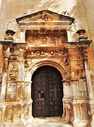
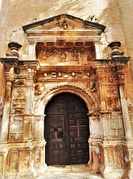

Grado de Pico is a town in Segovia that borders the other two provinces, Soria and Guadalajara. You breathe nature and mountains, and freedom. The hotel in the town where I stayed is quite good, giving the feeling of being at home. Like the house in my town in the north of Guadalajara. In general, the people of the town are very friendly and pleasant. This town is part of the so-called red towns of Segovia, in which the predominant material used for construction is ferruginous sandstone. These would be the type of town that you would see in the morning, there are also the yellow towns in which the material is quartzite and the black ones that are slate. Black towns are more typical of the Guadalajara province on the other side of the sierra, with Majalrayo and Valverde de los Arroyos being the most famous examples.
The Romanesque-style church of San Pedro is very well maintained, with baroque altarpieces. It so happened that I ran into the village priest and also the mayor and they showed it to me. This church has very elaborate capitals carved in stone that could be by the same artists who made the one in the monastery of Santo Domingo de Silos.


After the way to Ayllón, I would visit Santibañez de Ayllón, its streets and its church.
 

Lastly, I would arrive at Ayllón, one of the most important towns in Segovia that I would see in the day along with Sepúlveda and Pedraza. This town has the honor of having the title of the most beautiful towns in Spain.

I would park near the church of San Juan which is now private property and from there I would go up to the ruins of the castle. From above there is a panoramic view of Ayllón, highlighting the buildings the church of Santa María, the Plaza Mayor and the convent of La Concepción.


This church, which is the main one in the town, contains baroque altarpieces of great value.

In addition to these three sites that he would visit later, there are some palaces of great interest, such as the Flamboyant-style Contreras palace with its stone cordon bordering the noble shields or the Bishop's palace. It is worth seeing the arch of the town very close to these palaces. Arch or defensive door that had a double arch and into which any type of object could be thrown before an attempt to take the city. In addition to the church of Santa María la Mayor, there is the church of San Miguel, which may be the oldest in the town. A small temple with a chapel and some tombs of the town's nobles. Today, due to its location, different exhibitions or markets are organized in the Plaza Mayor next to the town hall where typical local products are sold.


After Ayllón and on the way to Riaza, I would stop at Santa María de Riaza to see its beautiful Romanesque church, the Church of the Nativity. This church has a large floor plan full of Romanesque arches and inside a beautiful set of 3 altarpieces, one Baroque and two older ones.


The main altarpiece is adorned with a series of 18 Renaissance tables and topped by the 12 apostles above that may come from other religious buildings. The coffered ceiling is from five centuries ago, in the Mudejar style, although pieces of the original Romanesque coffered ceiling were found during restoration work. Those pieces of wood are exposed on the wall and give an idea of the importance that the church could have had.

Later I would arrive at Riaza, which, despite its good reputation, did not seem very monumental to me. It has a circular main square where the town hall is located and many restaurants and old houses from the period and a Romanesque church that is now completely restored on the inside.

This church, Nuestra Señora del Manto has an old chapel but it is quite sober.


After seeing Riaza, I would head to Sepúlveda, which I would say is the most monumental town in Segovia after the capital. The first thing I would do would be to park, which despite having set up a very large space, was full of cars. From there I would walk to the wall and the old gate of the Villa. The wall is preserved and the different stages of its construction can be seen by the shape of the rocks and the color.


The most important religious building is the church of Nuestra Señora de la Peña. It is in the Romanesque style with a portico loaded with representations and some Baroque altarpieces. In it is the carving of the Virgin of La Peña, which is the oldest part of the altarpiece.


Pulling from there to the center you can see different noble houses such as the house of the Moor and other palaces. The town's main square impresses, with its old portals and its houses with balconies. It seems that the town hall was already built on the outskirts of the old city since the wall is just behind it.


At the top of the town is the church of El Salvador, in Romanesque style with decorated capitals. This church is seen in the following images. Other important churches the church of San Bartolomé and the church of Justo y Pastor.


Leaving the town, he would stop at the Zuloaga viewpoint where the Segovian painter would do some of his paintings about the towns of Segovia. There you can see the full extension and the limits of the town.

The next stop would be very close to Sepúlveda, although he should have stopped on the way out. Very close to the town of Duratón, a town of Roman origin where Confloenta is located, the site of the most important Roman town in the province after the capital. Just 3 km from the site is the church of Nuestra Señora de la Asunción, one of the most beautiful Romanesque churches in Segovia. The capitals with plant and animal details and the nativity of the Lord stand out. On the outside supported on a series of arches with the aforementioned capitals and decoration on the doors, archivolts.


© 2016 - All Rights Reserved - Designed by Sergio López Martínez
El sitio se mantiene gracias a la publicidad, por favor Desactiva Adblock para seguir navegando
He desactivado Adblock![[Valid RSS]](https://www.onepointsync.com/wp-content/uploads/2016/08/valid-rss-rogers.png "Validate my RSS feed")